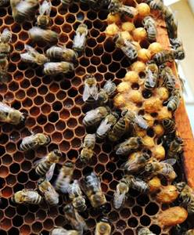

Бджільництво
Продукти
Лікування
Секрети бджільництва.
Як виправити сім'ю-трутовку і підсадити до неї матку.

Іноді буває так, що бджолина сім'я втрачає матку, а можливість вивести нову матку у такої сім'ї відсутня.
Частенько таке трапляється після невдалої зимівлі. Якщо ж матка в сім'ї з якихось причин загинула, то через деякий
час бджоли перетворюються на трутовок і починають замість матки самі сіяти незапліднені яйця.
Виправлення сім'ї-трутовки підрозуміває під собою очищення сім'ї від бджіл-трутовок або від дефектної матки і підсадку
в неї плідної матки. Проте це потребує від вас особливої обережності, оскільки бджоли, що довгий час знаходилися без
матки, стають дуже злими і готові убити будь-яку матку, яку ви до них підсадите. Проте є деякі методи, які дозволяють
це зробити з високою мірою надійності. Про один з них я і розповім вам сьогодні.
Буває, що матка в сім'ї є, але відкладає вона ті ж незапліднені яйця. Чому таке відбувається? Через дощову погоду,
наприклад, у молодої неплідної матки не було можливості вчасно облітатися і вона стала відкладати неправильні яйця
у бджолині осередки, формуючи тим самим горбатий розплід, з якого виходять трутні. Горбатий розплід називається так
тому, що він, на відміну від нормального розплоду, виступає над поверхнею стільників, утворюючи нерівну(горбату, див.
фото вище) поверхню. Поглянувши на засів можна визначити засіяні стільники маткою або пчелами-трутовками. Матка в
кожен осередок відкладає строго по одному яйцю, в той час, як пчелы-трутовки можуть відкласти по два, три і більше
яєць в один осередок.

Так відкладають яйця трутовки.
Щоб виправити трутовочну сім'ю і підсадити в неї плідну матку, уранці в гарну льотну погоду вам належить зробити наступне:
1.Віднести вулик з сім'єю-трутовкою убік від пасіки (метрів на 30) і висипати з нього усіх до єдиної бджіл на застелену поверхню. На неї ж струсити бджіл з усіх рамок і прибрати їх з пасіки.
2.Повернути порожній вулик без рамок на своє місце, закрити і почекати доки льотна бджола не повернеться в нього.
3.Ближче до вечора у бджолиний клуб, що сформувався на той час, помістити на добу закриту клітинку з плідною маткою.
3.Наступного дня, через добу, трохи відкрити клітинку з маткою з боку годівниці з канді або заліпити вихід вощиною, що відкрився. Весь цей час у вулику немає рамок. Бджоли з'їдять канді або розгризуть вощину і випустять матку.
4.Переконавшись через деякий час в тому, що бджоли стали відтягувати свої стільники-язики, а матка почала їх засівати, поставте у вулик рамки з сушею і вощиною, без розплоду.